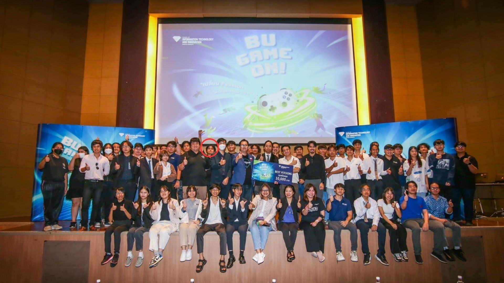
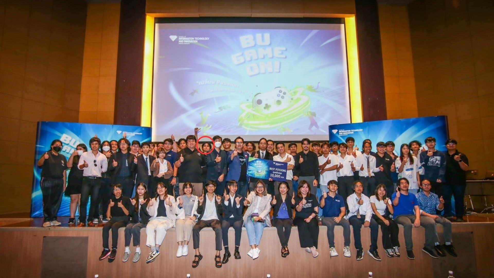
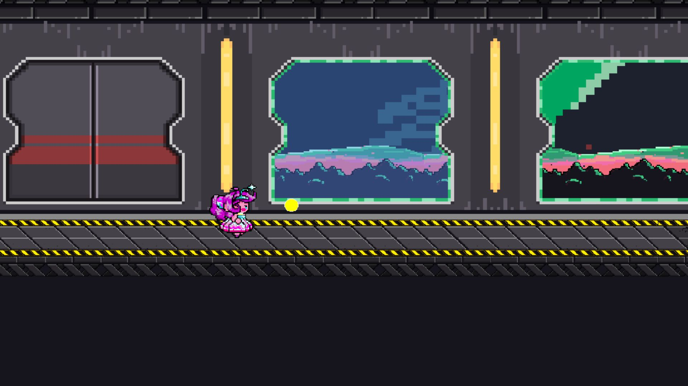
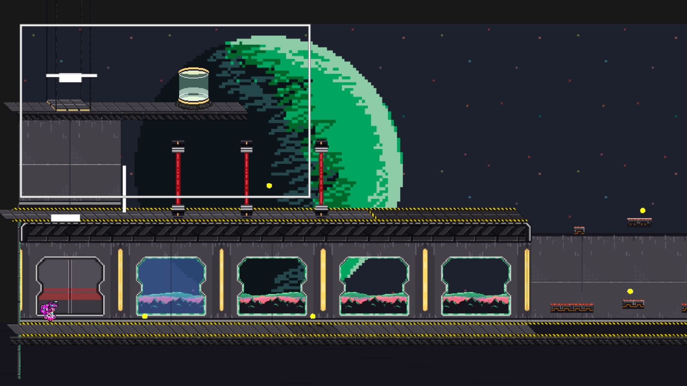
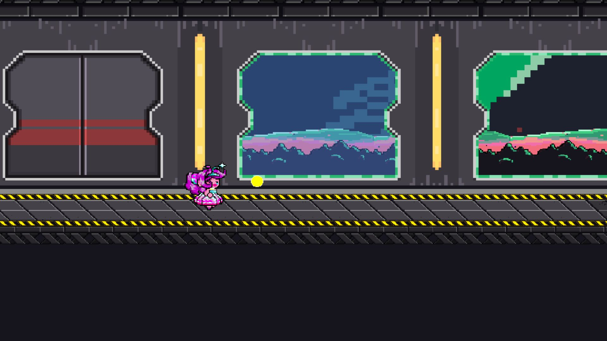
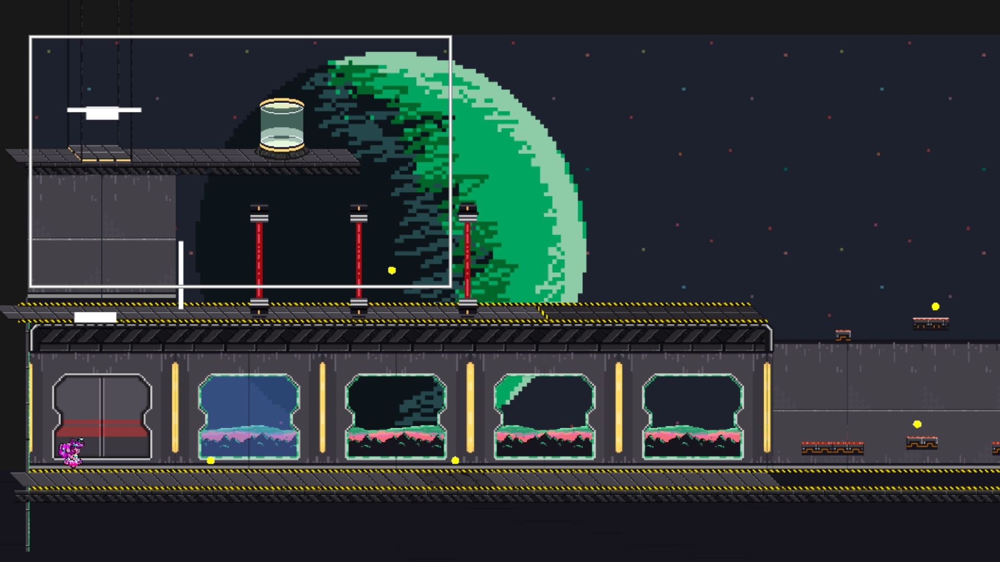

นายธนกร ศรัทธามาก
Game Developer | Programmer
Welcome to my portfolio. Here, you'll find my latest projects and skills.
2D Game Projects
Follow You (Adventure-Horror)
 

Follow You is an Adventure-Horror game where players must help a young girl escape from monsters. The game focuses on exploration, puzzle-solving, and storytelling, revealing why the girl can see monsters that others can't. Developed using Unity.
Team: 3 members | My role: Coding, Design, Sound
Key Learnings:
- 2D Character Scaling System (Press S to zoom in, Press W to zoom out, and fix character size bugs)
- Scene Transition: Managing player data between scenes
- Animation Implementation: Adding animations
- Sound Design: Designing sound effects
- Camera Follow System: Implementing a camera follow system
This game participated in BU GAME ON, which was the first event we applied for. We submitted our idea and got to join the event. Although we didn't win any awards, it removed my fear of challenges and allowed me to learn new skills, including a better understanding of the planning process to improve efficiency.
Doodle Trails (2.5D)


A Platformer-Puzzle game inspired by the concept of a sketchbook, developed using Unity.
Team: 5 members | My role: Coding, Map Design, Player Movement, Score System
Key Learnings:
- Set up player movement on the Z-axis
- Developed a Loop Map system to ensure continuous game floors while removing old areas to reduce lag
- Designed obstacles using 3 spawn points and a random spawn system (5:3)
- Sound Design: Creating sound effects
- Integrated the score system with Firebase to record player distance
Unnamed Project


 



A project that helped me understand the fundamentals of GameMaker Studio.
Team: 7 members | My role: Coding, Map Design
Key Learnings:
- Developed the player movement system
- Designed map layout to enhance gameplay
- Animation Implementation: Adding animations
- Created stage clear conditions: Players must collect all Ball Items to pass the stage
Slime

The first project using Unity, which helped me understand the basics of 2D game development.
Team: 5 members | My role: Coding, Map Design
Key Learnings:
- Began using Unity (first game developed)
- Designed a 2D map that minimized space while still offering engaging gameplay
- Developed an AI Following System using Circle Collider 2D to detect distance; if the player moves out of range, the AI stops following
3D Game Projects
God Fall


A 3D Open-world game with quest systems and RPG-style combat.
Team: 3 members | My role: Coding
Key Learnings:
- Developed a Quest System
- Applied Object-Oriented Programming (OOP) principles to manage the Health Points (HP) system